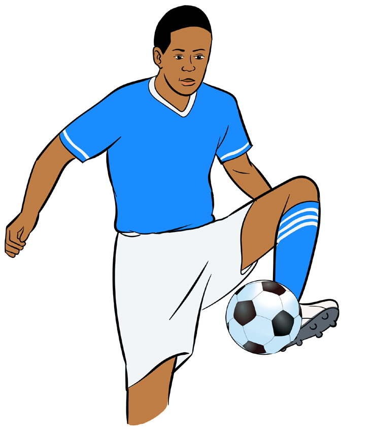

Controlling by foot
The ball dropping from above can be trapped and controlled by the inside, outside, instep or with the sole of the foot. For a better performance of ball control by foot do as follows:
(i)
Anticipate and quickly reach near the dropping point of the ball;
(ii)
Stay in a ready stance with eyes on the ball;
(iii)
Raise your foot appropriately to receive the ball, as shown in Figure 4.3;
(iv)
As the ball arrives, withdraw your foot downward; and
(v)
Drop the ball at feet or ground within a range of control.

Controlling by thigh
The balls that are dropping from above or those moving direct to you at approximately waist height can also be controlled by upper part of the mid-thigh. For a better performance of ball control by thigh do as follows:
(i)
Anticipate the flight path of the ball and quickly reach to intercept;
(ii)
Stay in a ready stance with eyes on the ball;
(iii)
Raise the receiving leg in such a way that the thigh is nearly parallel to the ground, as shown in Figure 4.4;
Activity 4.3
Using various drills, practise ball control by foot repetitively to master the skill.
Question:
Why it is important to withdraw your foot downward, as the ball arrives for good control in football?